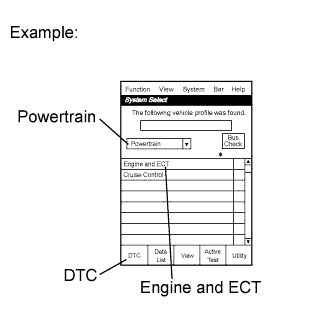
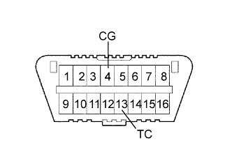
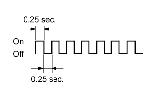
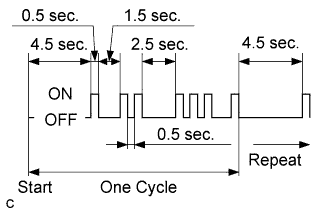
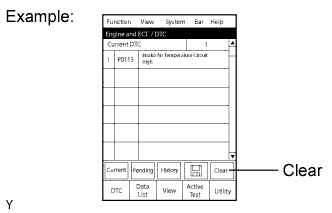

СИСТЕМА ECD > ПРОВЕРКА / СБРОС КОДОВ DTC |
| CHECK DTC (using the intelligent tester) |
Connect the intelligent tester to the DLC3.
Turn the ignition switch to ON and turn the tester on.
|  |
Enter the following menus: Powertrain / Engine and ECT / DTC.
Check and make a note of DTCs and freeze frame data.
Confirm the details of the DTCs (See page Нажмите здесь).
| CHECK DTC (not using the intelligent tester) |
|  |
Turn the ignition switch to ON.
Using SST, connect terminals 13 (TC) and 4 (CG) of the DLC3.
|  |
Read the DTCs by observing the MIL. If no DTC is stored, the MIL blinks as shown in the illustration.
|  |
Example
DTCs 12 and 31 are stored and the MIL starts outputting the DTCs as shown in the illustration. The MIL blinking pattern of DTC 12 will be output first.
A 2.5 second pause will occur. This pause will occur between the MIL blinking patterns of each DTC.
The MIL blinking pattern of DTC 31 will be output.
A 4.5 second pause will occur. This pause will occur when the MIL blinking pattern is the last of a string of multiple DTCs.
The MIL will repeat the output of the string of DTCs again.
Check the details of the malfunction using the DTC chart (See page Нажмите здесь).
After completing the check, disconnect terminals 13 (TC) and 4 (CG) to turn off the output.
Confirm the details of the DTCs (See page Нажмите здесь).
| CLEAR DTCS AND FREEZE FRAME DATA (using the intelligent tester) |
|  |
Connect the intelligent tester to the DLC3.
Turn the ignition switch to ON (do not start the engine) and turn the tester on.
Enter the following menus: Powertrain / Engine and ECT / DTC / Clear.
Clear DTCs and freeze frame data by pressing the YES button on the tester.
| CLEAR DTCS AND FREEZE FRAME DATA (not using the intelligent tester) |
 |
Perform either one of the following operations.
Remove the EFI fuse from the engine room relay block, located inside the engine compartment, for more than 1 minute.
| *1 | Engine Room Relay Block |
| *2 | EFI Fuse |
Disconnect the cable from the negative (-) battery terminal for more than 1 minute.